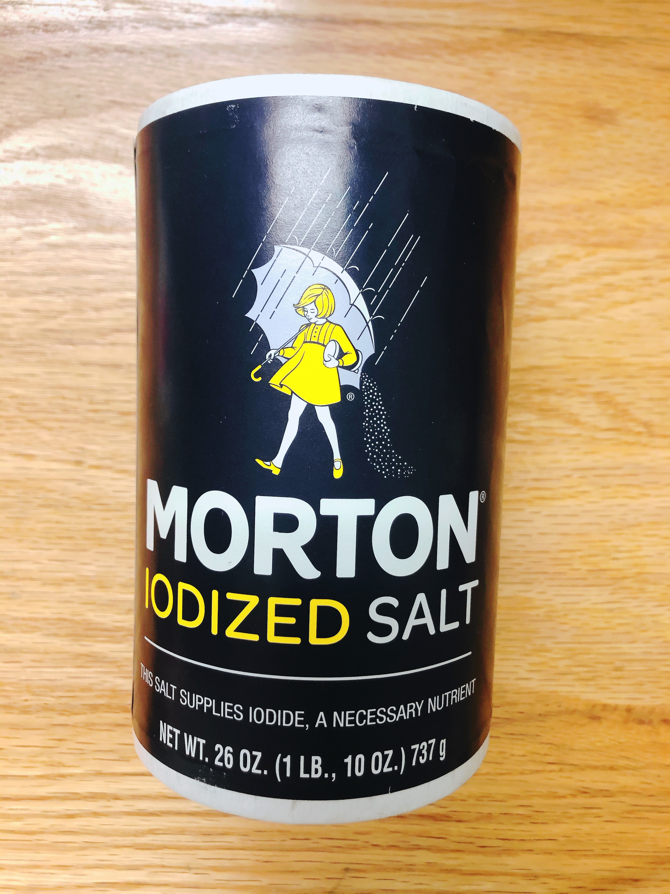
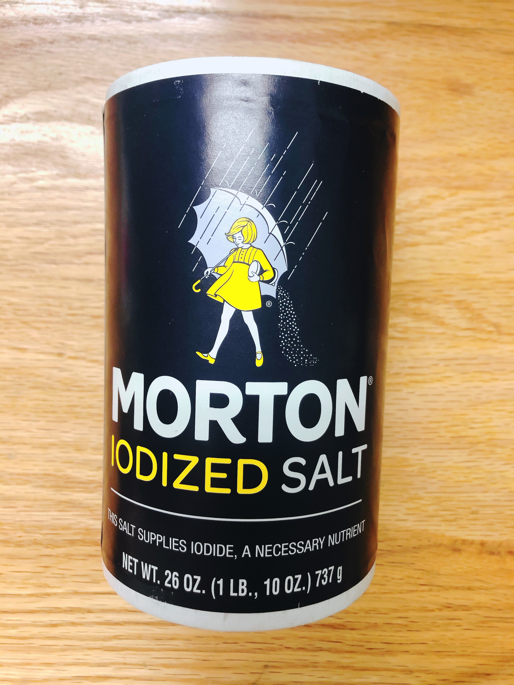

Homemade jelly desserts are not just for children. These soft and silky treats are easy to make and always a favorite at parties and potlucks for all ages. Before you dive into making these coconut jelly dessert that does not require a special occasion, you should know that this simple recipe uses agar agar.
INTRO
Prep Time: 10min
Cook time: 20min
Total Time: 4hrs
Serves: 4-6
Catagory: Dessert, Vegan
INGREDIENTS
- 1 cup coconut water
- 1 cup whole milk
- 2 cups coconut milk
- 1/2 cup agar agar flakes
- 4 Tbsp sugar
- 1 pinch salt


 



DIRECTIONS
STEP 1
step1
STEP 2
step2
STEP 3
step3
STEP 4
step4
STEP 5
step5
STEP 6
step6
RECIPE NOTES
Tip 1: You can add some corn starch with milk to reduce the cooking time!
Tip 2: You can add milk cream to increase the smell of milk!
Tip 3: Pop the bubbles with a toothpick before putting the container to the fridge!